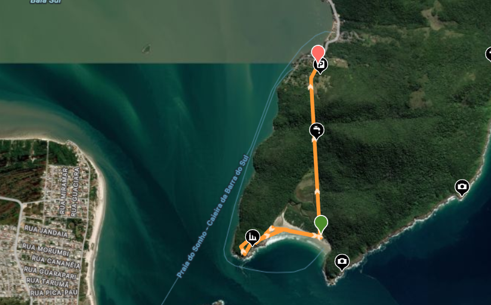
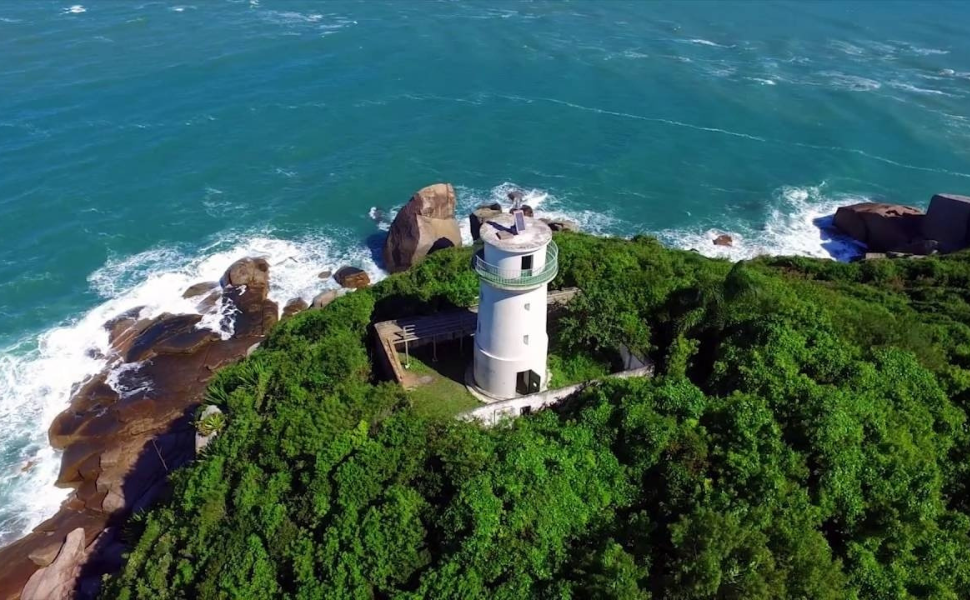
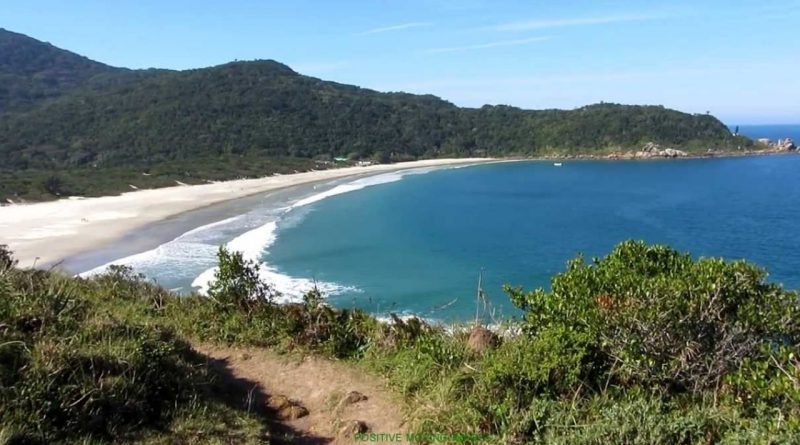
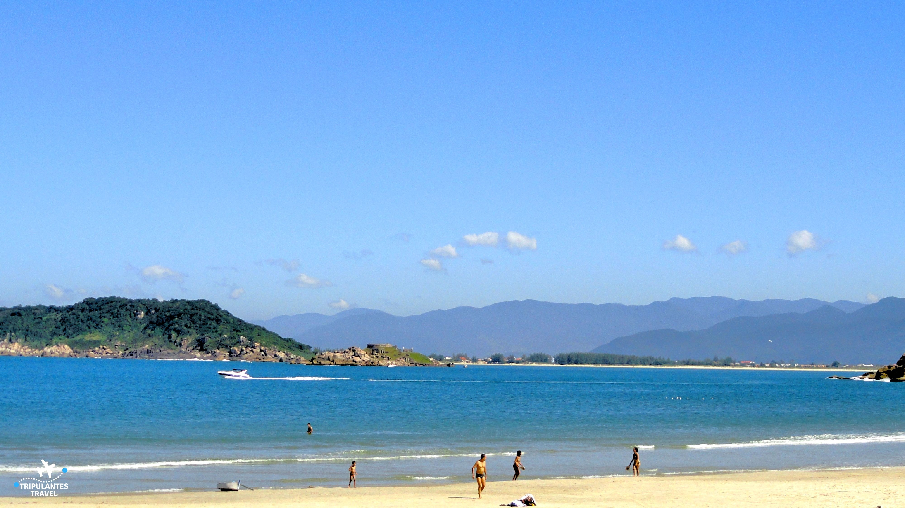

Trilha dos Naufragados
Sendero histórico ubicado en el extremo sur de Florianópolis, que atraviesa mata atlántica hasta llegar a la remota Praia dos Naufragados.
Dificultad: Moderada
Distancia3,8 km (ida)
Tiempo estimado1 h 30 min – 2 h
Altitud máxima120 m
TerrenoSendero natural, tierra y raíces
InicioCaieira da Barra do Sul
FinalPraia dos Naufragados
Cuidados y recomendaciones
- Llevar agua suficiente y protección solar.
- No dejar basura ni residuos en el sendero.
- Usar calzado adecuado para trekking.
- No salirse del camino señalizado.
- Respetar la flora y fauna local.
Advertencias
El sendero no cuenta con iluminación ni servicios. Evitar realizar la caminata al atardecer o con lluvias intensas, ya que el terreno puede volverse resbaloso.
Mapa del sendero

Mapa ilustrativo.
Ver recorrido real en Wikiloc
Galería


